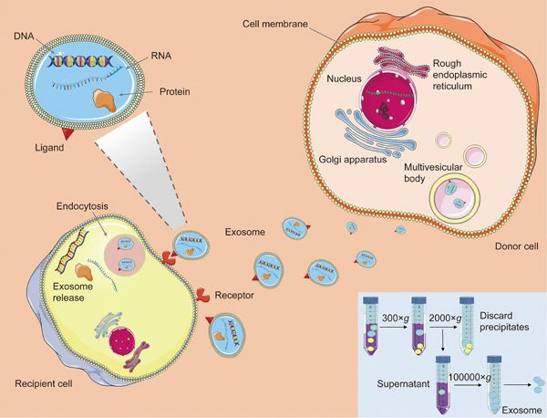
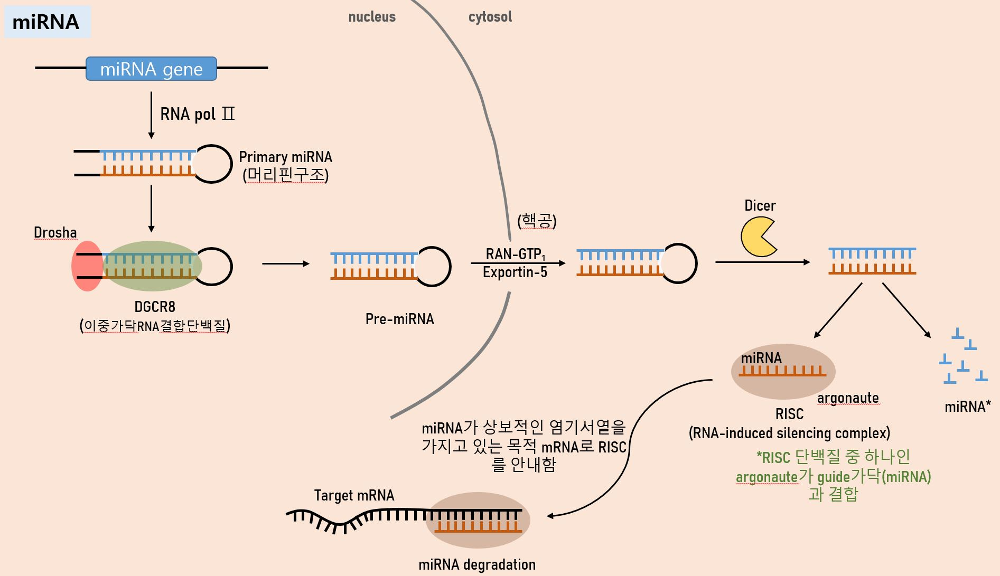

- Definition
- Protocol
- Thesis
1. Exosome
Exosomes are 50-150nm small extracellular vesicles (sEV)
that harbor proteins, lipids, RNA, and DNA
and thereby act as important mediators of cell-cell communications in various physiological and pathological pathways.
chemical inhibitor, genetic engineering, antibody are able to reduction sEV secretion.
Exosome marker : CD63, CD8, CD9, Filotillin-1, Alix, Tsg101

2. DNA methylation
CpG 염기서열 중 Cytosine 염기에 주로 일어난다.메틸기에 의한 화학공유결합으로 인한 변형으로, 염기서열의 변화를 초래하지는 않는다.

3. miRNA
약 22개의 nucleotide로 구성된 작은 비발현 RNA분자로, 단백질을 암호화하지 않는다.
RNA 침묵(=RNA 간섭)과 전사 이후의 유전자 발현을 조절한다.
